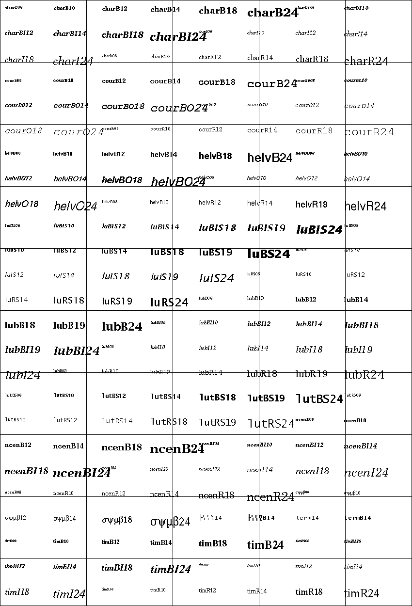

EVB Buttons
Event handlers
These will be called when state of the corresponding button is changed:
Member functions and properties
These handlers are called by process() whenever state of ‘up’, ‘down’, etc buttons have changed since last process() call
Check if ‘up’ button is pressed.
Check if ‘down’ button is pressed.
Check if ‘left’ button is pressed.
Check if ‘right’ button is pressed.
Check if ‘enter’ button is pressed.
Checks if any button is pressed.
Check if ‘backspace’ button is pressed.
Returns list of names of pressed buttons.
Check if currently pressed buttons exactly match the given list.
Return our corresponding evdev device object
This handler is called by process() whenever state of any button has changed since last process() call. changed_buttons is a list of tuples of changed button names and their states.
Check for currenly pressed buttons. If the new state differs from the old state, call the appropriate button event handlers.
Wait for the button to be pressed down and then released. Both actions must happen within timeout_ms.
ev3dev2.led.Led(name_pattern='*', name_exact=False, desc=None, **kwargs)¶Any device controlled by the generic LED driver. See https://www.kernel.org/doc/Documentation/leds/leds-class.txt for more details.
max_brightness¶Returns the maximum allowable brightness value.
brightness¶Sets the brightness level. Possible values are from 0 to max_brightness.
triggers¶Returns a list of available triggers.
trigger¶Sets the led trigger. A trigger is a kernel based source of led events. Triggers can either be simple or complex. A simple trigger isn’t configurable and is designed to slot into existing subsystems with minimal additional code. Examples are the ide-disk and nand-disk triggers.
Complex triggers whilst available to all LEDs have LED specific parameters and work on a per LED basis. The timer trigger is an example. The timer trigger will periodically change the LED brightness between 0 and the current brightness setting. The on and off time can be specified via delay_{on,off} attributes in milliseconds. You can change the brightness value of a LED independently of the timer trigger. However, if you set the brightness value to 0 it will also disable the timer trigger.
delay_on¶The timer trigger will periodically change the LED brightness between 0 and the current brightness setting. The on time can be specified via delay_on attribute in milliseconds.
delay_off¶The timer trigger will periodically change the LED brightness between 0 and the current brightness setting. The off time can be specified via delay_off attribute in milliseconds.
brightness_pct¶Returns led brightness as a fraction of max_brightness
ev3dev2.led.Leds¶set_color(group, color, pct=1)¶Sets brigthness of leds in the given group to the values specified in color tuple. When percentage is specified, brightness of each led is reduced proportionally.
Example:
my_leds = Leds()
my_leds.set_color('LEFT', 'AMBER')
With a custom color:
my_leds = Leds()
my_leds.set_color('LEFT', (0.5, 0.3))
set(group, **kwargs)¶Set attributes for each led in group.
Example:
my_leds = Leds()
my_leds.set_color('LEFT', brightness_pct=0.5, trigger='timer')
all_off()¶Turn all leds off
EV3 platform
Led groups:
LEFTRIGHTColors:
BLACKREDGREENAMBERORANGEYELLOWBrickPI platform
Led groups:
LED1LED2Colors:
BLACKBLUEBrickPI3 platform
Led groups:
LEDColors:
BLACKBLUEPiStorms platform
Led groups:
LEFTRIGHTColors:
BLACKREDGREENBLUEYELLOWCYANMAGENTAEVB platform
None.
ev3dev2.power.PowerSupply(address=None, name_pattern='*', name_exact=False, **kwargs)¶A generic interface to read data from the system’s power_supply class. Uses the built-in legoev3-battery if none is specified.
measured_current¶The measured current that the battery is supplying (in microamps)
measured_voltage¶The measured voltage that the battery is supplying (in microvolts)
max_voltage¶min_voltage¶technology¶type¶measured_amps¶The measured current that the battery is supplying (in amps)
measured_volts¶The measured voltage that the battery is supplying (in volts)
ev3dev2.sound.Sound¶Support beep, play wav files, or convert text to speech.
Note that all methods of the class spawn system processes and return subprocess.Popen objects. The methods are asynchronous (they return immediately after child process was spawned, without waiting for its completion), but you can call wait() on the returned result.
Examples:
# Play 'bark.wav':
Sound.play('bark.wav')
# Introduce yourself:
Sound.speak('Hello, I am Robot')
# Play a small song
Sound.play_song((
('D4', 'e3'),
('D4', 'e3'),
('D4', 'e3'),
('G4', 'h'),
('D5', 'h')
))
In order to mimic EV3-G API parameters, durations used in methods exposed as EV3-G blocks for sound related operations are expressed as a float number of seconds.
PLAY_WAIT_FOR_COMPLETE = 0¶Play the sound and block until it is complete
PLAY_NO_WAIT_FOR_COMPLETE = 1¶Start playing the sound but return immediately
PLAY_LOOP = 2¶Never return; start the sound immediately after it completes, until the program is killed
beep(args='', play_type=0)¶Call beep command with the provided arguments (if any). See beep man page and google linux beep music for inspiration.
| Parameters: |
|
|---|---|
| Returns: | When |
tone(*args, play_type=0)¶tone(tone_sequence)
Play tone sequence.
Here is a cheerful example:
my_sound = Sound()
my_sound.tone([
(392, 350, 100), (392, 350, 100), (392, 350, 100), (311.1, 250, 100),
(466.2, 25, 100), (392, 350, 100), (311.1, 250, 100), (466.2, 25, 100),
(392, 700, 100), (587.32, 350, 100), (587.32, 350, 100),
(587.32, 350, 100), (622.26, 250, 100), (466.2, 25, 100),
(369.99, 350, 100), (311.1, 250, 100), (466.2, 25, 100), (392, 700, 100),
(784, 350, 100), (392, 250, 100), (392, 25, 100), (784, 350, 100),
(739.98, 250, 100), (698.46, 25, 100), (659.26, 25, 100),
(622.26, 25, 100), (659.26, 50, 400), (415.3, 25, 200), (554.36, 350, 100),
(523.25, 250, 100), (493.88, 25, 100), (466.16, 25, 100), (440, 25, 100),
(466.16, 50, 400), (311.13, 25, 200), (369.99, 350, 100),
(311.13, 250, 100), (392, 25, 100), (466.16, 350, 100), (392, 250, 100),
(466.16, 25, 100), (587.32, 700, 100), (784, 350, 100), (392, 250, 100),
(392, 25, 100), (784, 350, 100), (739.98, 250, 100), (698.46, 25, 100),
(659.26, 25, 100), (622.26, 25, 100), (659.26, 50, 400), (415.3, 25, 200),
(554.36, 350, 100), (523.25, 250, 100), (493.88, 25, 100),
(466.16, 25, 100), (440, 25, 100), (466.16, 50, 400), (311.13, 25, 200),
(392, 350, 100), (311.13, 250, 100), (466.16, 25, 100),
(392.00, 300, 150), (311.13, 250, 100), (466.16, 25, 100), (392, 700)
])
Have also a look at play_song() for a more musician-friendly way of doing, which uses
the conventional notation for notes and durations.
| Parameters: |
|
|---|---|
| Returns: | When |
tone(frequency, duration)
Play single tone of given frequency and duration.
| Parameters: |
|
|---|---|
| Returns: | When |
play_tone(frequency, duration, delay=0.0, volume=100, play_type=0)¶Play a single tone, specified by its frequency, duration, volume and final delay.
| Parameters: |
|
|---|---|
| Returns: | When |
| Raises: | ValueError – if invalid parameter |
play_note(note, duration, volume=100, play_type=0)¶Plays a note, given by its name as defined in _NOTE_FREQUENCIES.
| Parameters: |
|
|---|---|
| Returns: | When |
| Raises: | ValueError – is invalid parameter (note, duration,…) |
play(wav_file, play_type=0)¶Play a sound file (wav format).
| Parameters: |
|
|---|---|
| Returns: | When |
play_file(wav_file, volume=100, play_type=0)¶Play a sound file (wav format) at a given volume.
| Parameters: |
|
|---|---|
| Returns: | When |
speak(text, espeak_opts='-a 200 -s 130', volume=100, play_type=0)¶Speak the given text aloud.
Uses the espeak external command.
| Parameters: |
|
|---|---|
| Returns: | When |
set_volume(pct, channel=None)¶Sets the sound volume to the given percentage [0-100] by calling
amixer -q set <channel> <pct>%.
If the channel is not specified, it tries to determine the default one
by running amixer scontrols. If that fails as well, it uses the
Playback channel, as that is the only channel on the EV3.
get_volume(channel=None)¶Gets the current sound volume by parsing the output of
amixer get <channel>.
If the channel is not specified, it tries to determine the default one
by running amixer scontrols. If that fails as well, it uses the
Playback channel, as that is the only channel on the EV3.
play_song(song, tempo=120, delay=0.05)¶Plays a song provided as a list of tuples containing the note name and its value using music conventional notation instead of numerical values for frequency and duration.
It supports symbolic notes (e.g. A4, D#3, Gb5) and durations (e.g. q, h).
For an exhaustive list of accepted note symbols and values, have a look at the _NOTE_FREQUENCIES
and _NOTE_VALUES private dictionaries in the source code.
The value can be suffixed by modifiers:
/ to obtain triplets for instance
(e.g. q/3 for a triplet of eight note)* (e.g. *1.5 is a dotted note).Shortcuts exist for common modifiers:
3 produces a triplet member note. For instance e3 gives a triplet of eight notes,
i.e. 3 eight notes in the duration of a single quarter. You must ensure that 3 triplets
notes are defined in sequence to match the count, otherwise the result will not be the
expected one.. produces a dotted note, i.e. which duration is one and a half the base one. Double dots
are not currently supported.Example:
>>> # A long time ago in a galaxy far,
>>> # far away...
>>> Sound.play_song((
>>> ('D4', 'e3'), # intro anacrouse
>>> ('D4', 'e3'),
>>> ('D4', 'e3'),
>>> ('G4', 'h'), # meas 1
>>> ('D5', 'h'),
>>> ('C5', 'e3'), # meas 2
>>> ('B4', 'e3'),
>>> ('A4', 'e3'),
>>> ('G5', 'h'),
>>> ('D5', 'q'),
>>> ('C5', 'e3'), # meas 3
>>> ('B4', 'e3'),
>>> ('A4', 'e3'),
>>> ('G5', 'h'),
>>> ('D5', 'q'),
>>> ('C5', 'e3'), # meas 4
>>> ('B4', 'e3'),
>>> ('C5', 'e3'),
>>> ('A4', 'h.'),
>>> ))
Important
Only 4/4 signature songs are supported with respect to note durations.
| Parameters: |
|
|---|---|
| Returns: | the spawn subprocess from |
| Raises: | ValueError – if invalid note in song or invalid play parameters |
ev3dev2.display.Display(desc='Display')¶Bases: ev3dev2.display.FbMem
A convenience wrapper for the FbMem class. Provides drawing functions from the python imaging library (PIL).
xres¶Horizontal screen resolution
yres¶Vertical screen resolution
shape¶Dimensions of the screen.
draw¶Returns a handle to PIL.ImageDraw.Draw class associated with the screen.
Example:
screen.draw.rectangle((10,10,60,20), fill='black')
image¶Returns a handle to PIL.Image class that is backing the screen. This can be accessed for blitting images to the screen.
Example:
screen.image.paste(picture, (0, 0))
clear()¶Clears the screen
update()¶Applies pending changes to the screen. Nothing will be drawn on the screen until this function is called.
line(clear_screen=True, x1=10, y1=10, x2=50, y2=50, line_color='black', width=1)¶Draw a line from (x1, y1) to (x2, y2)
circle(clear_screen=True, x=50, y=50, radius=40, fill_color='black', outline_color='black')¶Draw a circle of ‘radius’ centered at (x, y)
rectangle(clear_screen=True, x=10, y=10, width=80, height=40, fill_color='black', outline_color='black')¶Draw a rectangle ‘width x height’ where the top left corner is at (x, y)
point(clear_screen=True, x=10, y=10, point_color='black')¶Draw a single pixel at (x, y)
text_pixels(text, clear_screen=True, x=0, y=0, text_color='black', font=None)¶Display text starting at pixel (x, y).
The EV3 display is 178x128 pixels - (0, 0) would be the top left corner of the display - (89, 64) would be right in the middle of the display
‘text_color’ : PIL says it supports “common HTML color names”. There are 140 HTML color names listed here that are supported by all modern browsers. This is probably a good list to start with. https://www.w3schools.com/colors/colors_names.asp
text_grid(text, clear_screen=True, x=0, y=0, text_color='black', font=None)¶Display ‘text’ starting at grid (x, y)
The EV3 display can be broken down in a grid that is 22 columns wide and 12 rows tall. Each column is 8 pixels wide and each row is 10 pixels tall.
‘text_color’ : PIL says it supports “common HTML color names”. There are 140 HTML color names listed here that are supported by all modern browsers. This is probably a good list to start with. https://www.w3schools.com/colors/colors_names.asp
The ev3dev2.display.Display class allows to write text on the LCD using python
imaging library (PIL) interface (see description of the text() method
here).
The ev3dev2.fonts module contains bitmap fonts in PIL format that should
look good on a tiny EV3 screen:
import ev3dev2.fonts as fonts
display.draw.text((10,10), 'Hello World!', font=fonts.load('luBS14'))
ev3dev2.fonts.available()¶Returns list of available font names.
ev3dev2.fonts.load(name)¶Loads the font specified by name and returns it as an instance of PIL.ImageFont class.
The following image lists all available fonts. The grid lines correspond to EV3 screen size:
ev3dev2.port.LegoPort(address=None, name_pattern='*', name_exact=False, **kwargs)¶The lego-port class provides an interface for working with input and output ports that are compatible with LEGO MINDSTORMS RCX/NXT/EV3, LEGO WeDo and LEGO Power Functions sensors and motors. Supported devices include the LEGO MINDSTORMS EV3 Intelligent Brick, the LEGO WeDo USB hub and various sensor multiplexers from 3rd party manufacturers.
Some types of ports may have multiple modes of operation. For example, the input ports on the EV3 brick can communicate with sensors using UART, I2C or analog validate signals - but not all at the same time. Therefore there are multiple modes available to connect to the different types of sensors.
In most cases, ports are able to automatically detect what type of sensor or motor is connected. In some cases though, this must be manually specified using the mode and set_device attributes. The mode attribute affects how the port communicates with the connected device. For example the input ports on the EV3 brick can communicate using UART, I2C or analog voltages, but not all at the same time, so the mode must be set to the one that is appropriate for the connected sensor. The set_device attribute is used to specify the exact type of sensor that is connected. Note: the mode must be correctly set before setting the sensor type.
Ports can be found at /sys/class/lego-port/port<N> where <N> is incremented each time a new port is registered. Note: The number is not related to the actual port at all - use the address attribute to find a specific port.
address¶Returns the name of the port. See individual driver documentation for the name that will be returned.
driver_name¶Returns the name of the driver that loaded this device. You can find the complete list of drivers in the [list of port drivers].
modes¶Returns a list of the available modes of the port.
mode¶Reading returns the currently selected mode. Writing sets the mode. Generally speaking when the mode changes any sensor or motor devices associated with the port will be removed new ones loaded, however this this will depend on the individual driver implementing this class.
set_device¶For modes that support it, writing the name of a driver will cause a new device to be registered for that driver and attached to this port. For example, since NXT/Analog sensors cannot be auto-detected, you must use this attribute to load the correct driver. Returns -EOPNOTSUPP if setting a device is not supported.
status¶In most cases, reading status will return the same value as mode. In cases where there is an auto mode additional values may be returned, such as no-device or error. See individual port driver documentation for the full list of possible values.